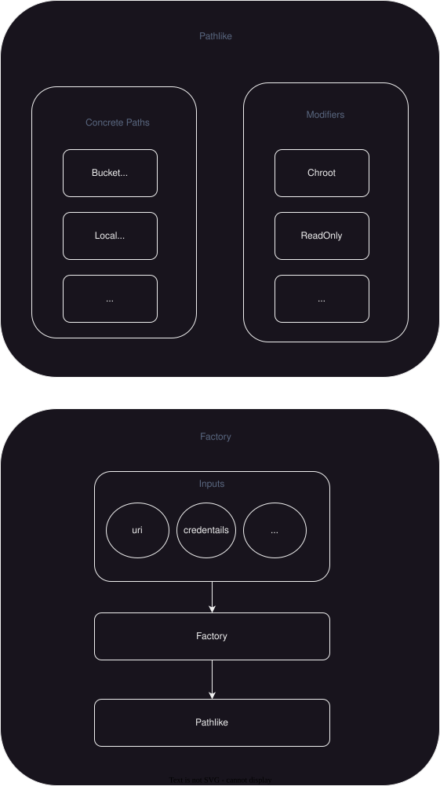

Design Document Bucket Path(s)#
Problem Description#
Users of the BucketFS file system need to use it in various diffrent contexts like, from the outside of the DB interacting with bucketfs, from within the DB when accessing BucketFS paths from within UDFs. Also common actions/tasks like listing a directory are pretty tedious when just interacting with the BucketFS API due to the fact that it does not know the concept of directories. So in order to simplify and streamline frequently used path operations and also provide a uniform interface accross the actual system (local path, http, …) behind the BucketFS path we need to have an abstraction for the user.
The BucketFS filesystem is an integral part of sharing and accessing data for its users. However, the current user experience with BucketFS presents several challenges, particularly in terms of versatility and ease of use across different contexts. Users interact with BucketFS both externally, from outside the database, and internally, within database operations such as accessing paths from within User-Defined Functions (UDFs). This dual mode of interaction introduces complexity and inefficiency, especially for common filesystem operations.
Delimitation#
The problem to be addressed focuses on managing common access and file handling issues. The aim is to ensure that different backends (http, fs, etc.) are abstracted, details such as bucket types or services shall not be reflected nor handled at this scope. These details may be relevant for internal logic but need to be concealed from the end user.
Challenges with Current BucketFS Interactions#
Contextual Versatility: Users face difficulties when switching between different operational contexts, such as external access (HTTP) versus internal access (local paths, during UDF execution). The lack of a seamless transition between contexts hinders productivity and introduces additonal code complexities.
Directory Operations: BucketFS inherently lacks the concept of directories as understood in traditional file systems. This absence complicates tasks like listing directory contents, making what should be simple actions cumbersome and time-consuming. Users are forced to interact with a lower-level BucketFS API for directory-like operations, which is not only tedious but also counterintuitive.
Uniform Interface Absence: There is a notable absence of a uniform interface for interacting with the underlying systems (local filesystem, HTTP, etc.) behind the BucketFS paths. This inconsistency in interfaces across different backends complicates the user experience, as users must adjust their interaction patterns depending on the underlying system being accessed.
Proposed Solution#
To address the identified issues with BucketFS interactions, we propose adding an abstraction layer that simplifies and standardizes these interactions across different contexts and operations. This approach is based on the design of the pathlib module in the Python standard library, which abstracts filesystem access across operating systems.
Our proposed path abstraction layer will:
Mirror the `pathlib` Interface: By adopting an interface similar to pathlib, the abstraction aims to utilize its structured and proven design for filesystem interaction. This decision is based on the objective to leverage pathlib’s intuitive model while adjusting it to fit the specific requirements of BucketFS.
Focus on Essential Functionalities: Although inspired by pathlib, the proposed abstraction will be streamlined to include only the functionalities necessary for effective BucketFS management. It will diverge from pathlib in areas specific to BucketFS’s architecture and use cases, ensuring a tailored approach.
Enhance Filesystem Operations: The abstraction is designed to facilitate common filesystem tasks such as directory listings and file operations, addressing the current lack of a unified method for such interactions in BucketFS. This enhancement aims to standardize the way users interact with the filesystem, regardless of the backend system.
The development of a path abstraction layer, while inspired by pathlib, is specifically designed to meet the unique interaction requirements of BucketFS. This proposed solution focuses on the practical needs of BucketFS users, aiming to streamline their workflow and improve efficiency in managing filesystem tasks.
Desgin#
Design Goals#
The primary goal of this design is to create an abstraction that simplifies working with the BucketFS file system and its usages. Additionaly we wan’t to maintain compatibility with the intuitive and widely used pathlib interface(s) where possible.
This abstraction should:
Simplify interacting with BucketFS paths, by providing implentations for common tasks.
Provide a way to persist and/or share path information accross processes and systems.
Reduce the learning curve for users familiar with the pathlib interface.
Make sure the behaviour follows pathlib wherever possible.
Ensure that the design is flexible enough to accommodate future enhancements and new features.
Architecture#
The architecture of the proposed solution is divided into four main components:
Interface (Pathlike)
Backends (Concrete Paths)
Extensions (Modifiers)
Path Creation (Factory)
Overview#

Interface#
The central component of our path abstraction is defined by the Pathlike protocol. We opted for a protocol over a class or abstract class to eliminate inheritance and unnecessary dependencies while maintaining a clear interface.
The Pathlike protocol specifies the essential functionalities of this abstraction, aiming for compatibility with Python’s pathlib Path interfaces wherever practical.
Backends#
Backends implement the Pathlike protocol for specific underlying systems. Currently, we need at least two backends: one for local BucketFS paths and another for HTTP-based BucketFS paths.
Extensions#
Extensions modify Pathlike objects to add general-purpose capabilities. Currently, we plan to implement at least two extensions:
Chroot#
Ensures a path is restricted to a specific root, preventing traversal above it, even if the modified path is not the system’s actual root.
Use Cases:
Simplify directory pinning for users
Emulate custom roots
ReadOnly#
Adjusts for the differences in behavior of local paths within UDFs, such as their read-only nature. This modifier allows the API to appropriately handle UDF paths.
Path Creation#
Path creation is managed by a factory. Not all information required for creating or sharing a path is uniformly applicable across systems and processes. For example, while the location and settings can be determined from the uri, credentials should not be openly shared.
The API’s factory system compiles necessary information and provides a straightforward interface for users to create paths.
Detailed Design#
The Bucket Path API aims to align with Python’s pathlib abstractions, while not mirroring its entire interface due to the extensive functionality and some aspects not being fully compatible with bucket file systems.
The goal is to utilize common functionalities and names, to improve the ease of use and reduce the learning curve.
It’s important to note that wherever feasible, we adopt function and property names along with semantics from pathlib.
However, when there is a significant deviation in semantics from pathlib definitions, we choose distinct names for properties and functions. This approach ensures clarity for users regarding differences.
Implementation guidelines are as follows:
Embrace and use
pathlibsemantics and naming conventions when applicable.For significant semantic deviations, opt for unique, clear names that avoid confusion with
pathlibterminology.
Attention
The subsequent subsections include code snippets intended primarily for the implementer’s reference. Therefore, comments and docstrings within the sudo code may need adaptation for the actual implementation.
Pathlike#
from typing import Protocol
class Pathlike(Protocol):
@property
def name:
"""
A string representing the final path component, excluding the drive and root, if any.
"""
@property
def suffix:
"""
The file extension of the final component, if any.
"""
@property
def root:
"""
A string representing the root, if any.
"""
@property
def parent:
"""
The logical parent of this path.
"""
def as_uri():
"""
Represent the path as a file URI. Can be used to reconstruct the location/path.
"""
def exists():
"""
Return True if the path points to an existing file or directory.
"""
def is_dir():
"""
Return True if the path points to a directory, False if it points to another kind of file.
"""
def is_file():
"""
Return True if the path points to a regular file, False if it points to another kind of file.
"""
def read(chunk_size: int = 8192) -> Iterable[ByteString]:
"""
Read the content of a the file behind this path.
Only works for pathslike objects which return True for `is_file()`.
Args:
chunk_size: which will be yieled by the iterator.
Returns:
Returns an iterator which can be used to read the contents of the path in chunks.
Raises:
NotAFileError: if the pathlike object does not point to a file.
FileNotFoundError: If the file does not exist.
"""
def write(data: ByteString | BinaryIO | Iterable[ByteString]):
"""
Writes data to a this path.
After successfully writing to this path `exists` will yield true for this path.
If the file already existed it will be overwritten.
Args:
data: which shall be writen to the path.
Raises:
NotAFileError: if the pathlike object is not a file path.
"""
def rm():
"""
Remove this file.
Note:
If `exists()` and is_file yields true for this path, the path will be deleted,
otherwise exception will be thrown.
Raises:
FileNotFoundError: If the file does not exist.
"""
def rmdir(recursive: bool = False):
"""
Removes this directory.
Note: In order to stay close to pathlib, by default `rmdir` with `recursive`
set to `False` won't delete non-empty directories.
Args:
recursive: if true the directory itself and its entire contents (files and subdirs)
will be deleted. If false and the directory is not empty an error will be thrown.
Raises:
FileNotFoundError: If the file does not exist.
PermissionError: If recursive is false and the directory is not empty.
"""
def joinpath(*pathsegements) -> Pathlike:
"""
Calling this method is equivalent to combining the path with each of the given pathsegments in turn.
Returns:
A new pathlike object pointing the combined path.
"""
def walk() -> Tuple[Pathlike, List[str], List[str]]:
"""
Generate the file names in a directory tree by walking the tree either top-down or bottom-up.
Note:
Try to mimik https://docs.python.org/3/library/pathlib.html#pathlib.Path.walk as closely as possible,
except the functionality associated with the parameters of the `pathlib` walk.
Yields:
A 3-tuple of (dirpath, dirnames, filenames).
"""
def iterdir() -> Generator[Pathlike, None, None]:
"""
When the path points to a directory, yield path objects of the directory contents.
Note:
If `path` points to a file then `iterdir()` will yield nothing.
Yields:
All direct children of the pathlike object.
"""
# Overload / for joining, see also joinpath or `pathlib.Path`.
def __truediv__():
"""
"""
Concrete Paths (Backends)#
Implement the Pathlike protocol for each specific backend. Concrete paths must include:
A
protocolmember indicating the associated protocol.Backend-specific methods for creation.
Implementations for all methods and properties required by the
Pathlikeprotocol
Each backend must implement the as_uri method in a way that the location is clearly identifiable.
# Attention: needs to provide/implment Pathlike protocol
class BucketPath:
"""
Provides access to a bucket path served via http or https.
"""
# uri protocol specifies associated with this class
protocol = ['bfs', 'bfss']
def __init__(bucket: Bucket, path: str):
"""
Creates a new BucketPath.
Args:
bucket: used for accssing and interacting with to the underlying bucket.
path: of the file within the bucket.
"""
# Pathlike functionalities
# ...
# Attention: needs to provide/implment Pathlike protocol
class LocalPath:
"""
Provides access to a bucket path served local file system paths.
"""
# uri protocol specifies associated with this class
protocol = ['bfsl']
def __init__(path):
"""
Creates a new LocalPath.
Args:
path: of the file within the local file system.
"""
# Pathlike functionalities
# ...
Modifiers (Extensions)#
Modifiers encapsulate exactly one aspect, e.g. changing the root of a Pathlike object.
Each modifier:
- Modifiers do not have a protocol indicator
- Extends the URI with on option and value which can be used to reconstruct the Modifier.
- Must be designed to consider compatibility with other modifiers, potentially working in combination.
- Must support the Pathlike interface/protocol
# Attention: needs to provide/implment Pathlike protocol
class Chroot:
"""
Modifies a pathlike object so it will be locked into a specified root.
"""
def __init__(self, path: Pathlike, chroot='/'):
"""
Create a new Chroot.
Args:
path: like object which shall be locked into a new root.
chroot: the path like object shall be rectricted/pinned to.
Returns:
Creates a new Chroot protected path like object.
"""
# Pathlike functionalities
# Note: functions like ``parent`` should stop at the new root
# ...
# Attention: needs to provide/implment Pathlike protocol
class ReadOnly:
"""
Modifies a pathlike object so it will be readonly.
"""
def __init__(path: Pathlike):
"""
Create a new ReadOnly Pathlike object.
Args:
path: like object which will be write proected (readonly).
Returns:
A path like object whith write proection.
"""
# Pathlike functionalities
# Note: Non readonly actions should throw an exception
# ...
Factory & Builders#
def PathBuilder:
def __init__(credentails_store, *args, **kwargs):
"""
Initalizes the factory with settings which are required besides the actual path uri.
Args:
credentail_store: for accessing buckets, see Service.
Note: It is not clear yet if additional information will be required for the actual
implementations. If needed please add bellow.
*args: TBD
*kwargs: TBD
Returns:
A `PathBuilder` object which can be aliased as `Path` for creating paths based on uris.
"""
pass
def __call__(uri: str) -> Pathlike:
"""
Creates a new Path (BucketPath, LocalPath, ...) based on the provided uri.
Args:
uri: for which a Path (Pathlike) object should be created.
Returns:
A Pathlike object for the given uri.
"""
# type: LocalPath, BucketPath, Chroot ...
#
# Note: based on the uri the factory should assemble the apropriate Pathlike object.
# E.g.:
type = _determine_type(path)
facories = {
"udf" = _create_udf_path,
"bfs" = _create_bucket_path,
"chroot" = _create_chroot_path,
}
factory = factory[type]
return factory(args)
Examples#
from exasol.bucketfs import PathBuilder
Path = PathBuilder(credentials)
# Create different kinds of bucketfs paths
udf_path = Path("bfsl://some/local/path/file.tar.gz")
http_bucket_path = Path("bfs://127.0.0.1:8888/service/bucket/some/file.tar.gz")
https_bucket_path = Path("bfss://127.0.0.1:8888/service/bucket/some/file.tar.gz")
chroot_path = Path("bfss://127.0.0.1:8888/service/bucket/some/sub/subsub/file.tar.gz?chroot=/some/sub/")
readonly_path = Path("bfsl://some/local/path/file.tar.gz?mode=ro")
Utilities#
Uri = str
def as_udf_path(path: Uri | BucketPath) -> Pathlike:
"""
Convert a BucketPath to a LocalPath (UdfPath).
Args:
path: BucketPath which should be converted to a LocalPath.
Returns:
A LocalPath (UdfPath) object.
"""